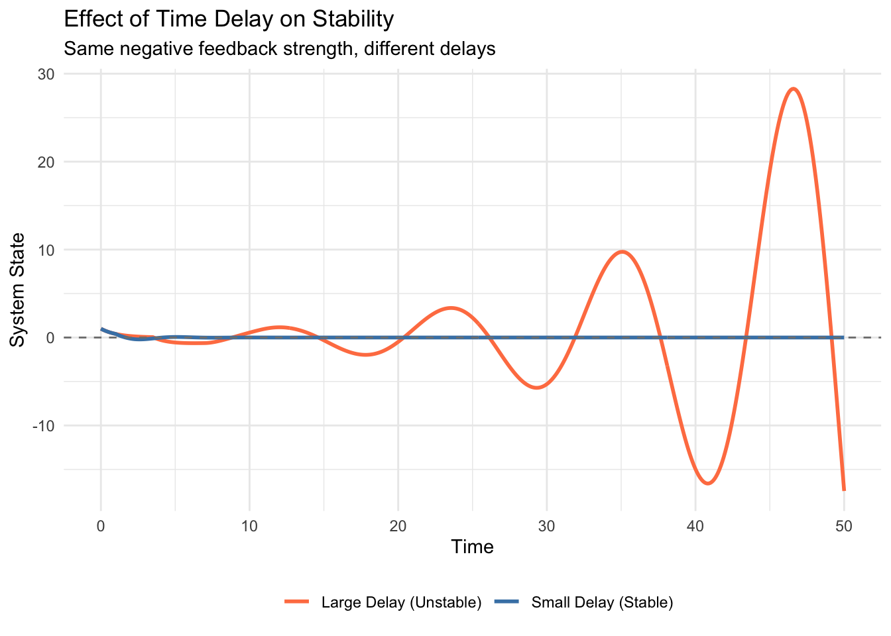
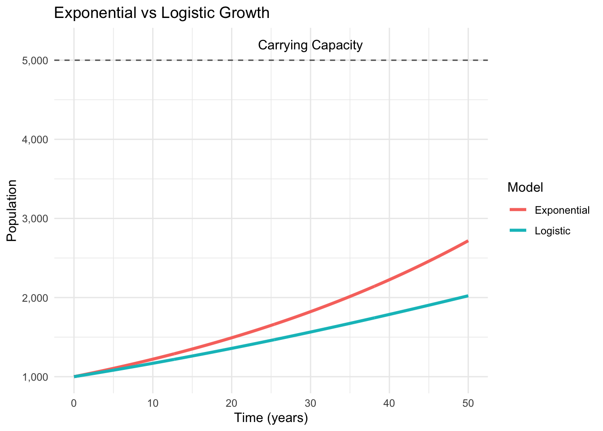

Chapter 2 Why the World Changes: An Introduction to Differential Equations
Watch a cup of coffee cool down on your desk. The temperature doesn’t drop all at once—it changes gradually, and the rate of cooling depends on how hot the coffee is at any given moment. Hotter coffee cools faster; lukewarm coffee barely changes temperature at all. This simple observation captures something fundamental about how the world works: most interesting phenomena don’t jump from one state to another instantly. They evolve continuously, and the speed of that evolution depends on where they currently are.
This is the world of differential equations, and once you start seeing it, you’ll notice it everywhere.
2.1 The Language of Change
When we say #Differential_Equations we’re really talking about a relationship between a quantity and how fast it’s changing. Consider population growth in a small town. The population \(P(t)\) at time \(t\) might grow at a rate proportional to how many people already live there—more people means more babies, after all. We can write this as:
\[\frac{dP}{dt} = rP\]
That symbol \(\frac{dP}{dt}\) represents the rate of change of population with respect to time. The constant \(r\) tells us how quickly the population grows when there are \(P\) people around. If \(r = 0.02\) per year, then a town of 1000 people would be growing at about 20 people per year, while a city of 100,000 would be adding 2000 people annually.
This notation might look intimidating at first, but it’s actually expressing something quite natural. The left side asks “how fast is the population changing?” The right side answers “it depends on how big the population already is.”
2.2 From Coffee to Cosmos
The beauty of differential equations lies in their universality. That same mathematical structure—rate of change equals some function of the current state—appears across disciplines in ways that might surprise you.
Newton’s law of cooling describes how our coffee temperature \(T(t)\) changes:
\[\frac{dT}{dt} = -k(T - T_{room})\]
The negative sign indicates that hot coffee cools down, and the term \((T - T_{room})\) means the cooling rate depends on the temperature difference between coffee and room. When they’re nearly equal, cooling essentially stops.
Radioactive decay follows a similar pattern. If \(N(t)\) represents the number of radioactive atoms at time \(t\):
\[\frac{dN}{dt} = -\lambda N\]
Each atom has the same probability of decaying per unit time, so the total decay rate is proportional to how many atoms remain. The constant \(\lambda\) characterizes the particular radioactive material—uranium-238 has a much smaller \(\lambda\) than carbon-14.
What’s remarkable is that these three phenomena—population growth, cooling, and radioactive decay—share the same mathematical skeleton despite operating through completely different mechanisms.
2.3 Getting Our Hands Dirty: Solving a Simple Example
Let’s work through the population growth equation step by step. We have:
\[\frac{dP}{dt} = rP\]
This is what mathematicians call a “separable” differential equation because we can separate the variables. Rearranging:
\[\frac{dP}{P} = r \, dt\]
Now we integrate both sides. The left side gives us \(\ln|P|\), and the right side gives us \(rt + C\), where \(C\) is an integration constant:
\[\ln|P| = rt + C\]
Exponentiating both sides:
\[P(t) = e^{rt + C} = e^C \cdot e^{rt}\]
Since \(e^C\) is just another constant, let’s call it \(P_0\):
\[P(t) = P_0 e^{rt}\]
This tells us that \(P_0\) represents the initial population at time \(t = 0\). The solution describes exponential growth when \(r > 0\) and exponential decay when \(r < 0\).
2.4 Seeing the Solution in Action
Let’s explore this with R. Suppose we start with 1000 people and a growth rate of 2% per year:
# Load required libraries
library(ggplot2)
# Define parameters
P0 <- 1000 # initial population
r <- 0.02 # growth rate (2% per year)
# Create time vector (0 to 50 years)
t <- seq(0, 50, by = 0.5)
# Calculate analytical solution
P_analytical <- P0 * exp(r * t)
# Create a data frame for plotting
population_data <- data.frame(
time = t,
population = P_analytical
)
# Plot the results
ggplot(population_data, aes(x = time, y = population)) +
geom_line(color = "steelblue", size = 1.2) +
labs(
title = "Exponential Population Growth",
x = "Time (years)",
y = "Population",
subtitle = paste("Starting population:", P0, "Growth rate:", r)
) +
theme_minimal() +
scale_y_continuous(labels = scales::comma)## Warning: Using `size` aesthetic for lines was deprecated in ggplot2 3.4.0.
## ℹ Please use `linewidth` instead.
## This warning is displayed once every 8 hours.
## Call `lifecycle::last_lifecycle_warnings()` to see where this warning was generated.
The curve starts gently but becomes increasingly steep. After 35 years, our town of 1000 has doubled to about 2000 people. But notice how the growth accelerates—it takes only 15 more years to double again to 4000.
This exponential behavior appears troubling for real populations, which can’t grow indefinitely. A small town doesn’t have infinite resources or space. We’ll need more sophisticated models to capture these constraints, but that’s a story for future posts.
2.5 When Theory Meets Reality
While our simple exponential model works well for early stages of growth, real populations often behave differently. Bacterial cultures growing in petri dishes initially follow exponential growth, but as nutrients become scarce and waste products accumulate, growth slows and eventually stops.
This observation led to the logistic equation, which modifies our simple model:
\[\frac{dP}{dt} = rP\left(1 - \frac{P}{K}\right)\]
The term \(\left(1 - \frac{P}{K}\right)\) acts as a brake on growth when the population \(P\) approaches the carrying capacity \(K\). When \(P\) is small compared to \(K\), this term is approximately 1, and we recover exponential growth. But as \(P\) approaches \(K\), growth slows to zero.
Let’s compare these models:
# Parameters for logistic growth
K <- 5000 # carrying capacity
# Calculate logistic growth numerically
# We'll use a simple approximation here
dt <- 0.1
time_steps <- 500
t_numeric <- seq(0, time_steps * dt, by = dt)
P_logistic <- numeric(length(t_numeric))
P_logistic[1] <- P0
for(i in 2:length(t_numeric)) {
P_current <- P_logistic[i-1]
dP_dt <- r * P_current * (1 - P_current/K)
P_logistic[i] <- P_current + dP_dt * dt
}
# Create comparison data frame
comparison_data <- data.frame(
time = rep(t_numeric[1:501], 2), # First 501 points
population = c(P0 * exp(r * t_numeric[1:501]), P_logistic[1:501]),
model = rep(c("Exponential", "Logistic"), each = 501)
)
# Plot comparison
ggplot(comparison_data, aes(x = time, y = population, color = model)) +
geom_line(size = 1.2) +
labs(
title = "Exponential vs Logistic Growth",
x = "Time (years)",
y = "Population",
color = "Model"
) +
theme_minimal() +
scale_y_continuous(labels = scales::comma) +
geom_hline(yintercept = K, linetype = "dashed", alpha = 0.7) +
annotate("text", x = 30, y = K + 200, label = "Carrying Capacity")
The logistic curve starts exponentially but gradually levels off as it approaches the carrying capacity. This S-shaped curve appears throughout biology and beyond—from the adoption of new technologies to the spread of information through social networks.
2.6 The Bigger Picture
These examples represent just the beginning of what differential equations can do. They provide a mathematical framework for understanding how systems evolve over time, whether we’re talking about the motion of planets, the flow of electricity through circuits, the dynamics of predator-prey relationships, or the spread of epidemics.
What makes differential equations particularly powerful is their ability to predict future behavior based on current conditions and understanding of underlying mechanisms. If we know the current population and growth rate, we can forecast future population levels. If we understand how coffee cools, we can predict when it’ll reach drinking temperature.
The mathematical tools we’ve introduced—separation of variables, integration, and exponential functions—form the foundation for more complex scenarios. In our next post, we’ll explore techniques for solving different types of differential equations and discover when analytical solutions exist and when we need to rely on numerical methods.
Real-world systems rarely follow simple exponential patterns indefinitely. They encounter constraints, interact with other variables, and sometimes exhibit surprising behaviors. But every complex system starts with understanding these basic building blocks. Once you grasp how individual variables change over time, you can begin to see how entire systems evolve, adapt, and sometimes surprise us with their behavior.
The world is constantly changing around us. Differential equations give us the mathematical vocabulary to describe that change precisely and, perhaps most importantly, to understand what comes next.